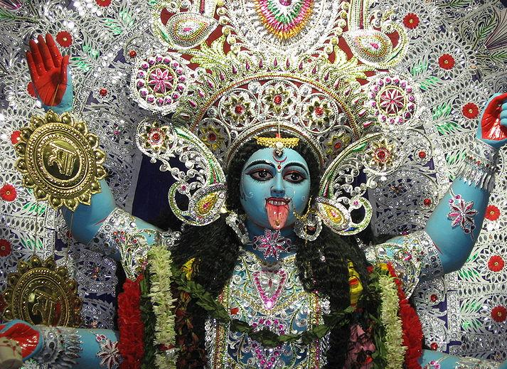

HOME
Kali Puja

The worship of Goddess Kali makes the festival of Diwali in the state of West Bengal very unique. The houses and temples all over the state are vivaciously decorated and lit with oil lamps, candles or `diyas`. All the family members gather around in the evening for the worship of Goddess Lakshmi. In this state the Diwali festival stretches over a period of three days. The first two days mainly comprises of feasting, gambling, drinking, family foregathering, lighting of fire crackers and other such activities. The celebrations and lights are much less on the final day of Amavasya. Exchange of gifts and greetings also form a vital part of the festivities.